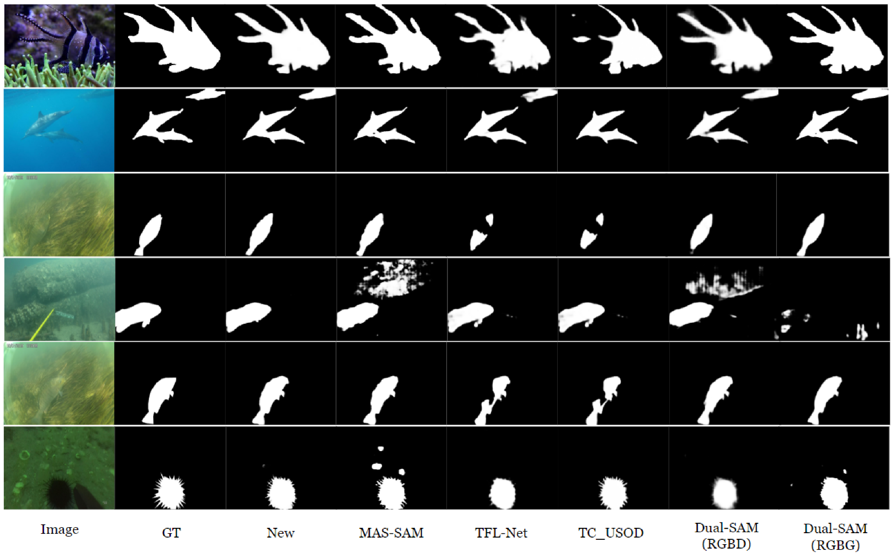
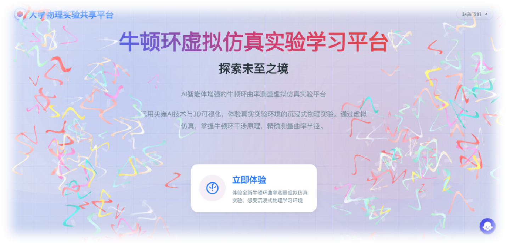

TOP 1 | 国家级一等奖
海豚杯数智应用创新大赛 - 信贷风控
担任团队负责人。针对金融高维非平衡数据，构建端到端风控模型。并行训练 LightGBM/XGBoost 等5个模型，利用 Optuna 自动调优与 Stacking 融合策略，AUC 达到 0.889。
PythonStackingOptuna
查看完整报告

TOP 2 | 省级一等奖
卓越杯大数据挑战赛 - 多模态分割
算法架构设计。提出 RGB+Depth 双输入架构，解决水下模态缺失问题。设计 DFF 动态特征融合模块，移除 HEM 模块实现轻量化。
PyTorchCVDeep Learning
查看完整报告

TOP 3 | 国家级三等奖
牛顿环虚拟仿真实验平台
前端负责人。基于 WebGL/Three.js 开发的物理实验平台。使用 Canvas 绘制动态干涉条纹，Three.js 渲染 3D 器材，集成 AI 智能体指导。
Three.jsWebGLVue.js
观看在线演示